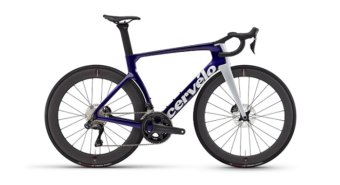

All bikes isn't just a bike
Choose the definetly bike would you like to buy
A bike/bike parts website is a platform that provides information about the different parts of a bicycle, their functions, and how they work together to create a complete bike. It may include a glossary of bike components, a list of bicycle parts, and a jargon buster to help beginners understand the terminology used in the cycling industry. The website may also provide tips on how to maintain and repair a bike, as well as recommendations for the best bike parts and accessories to use.
Order now
